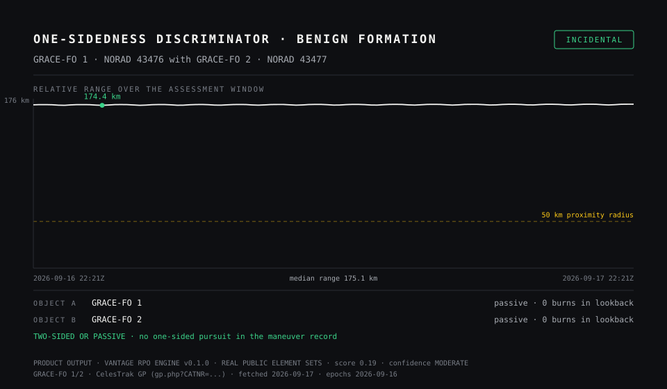
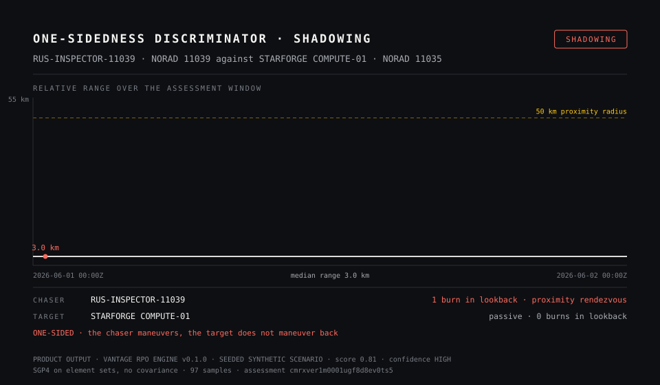
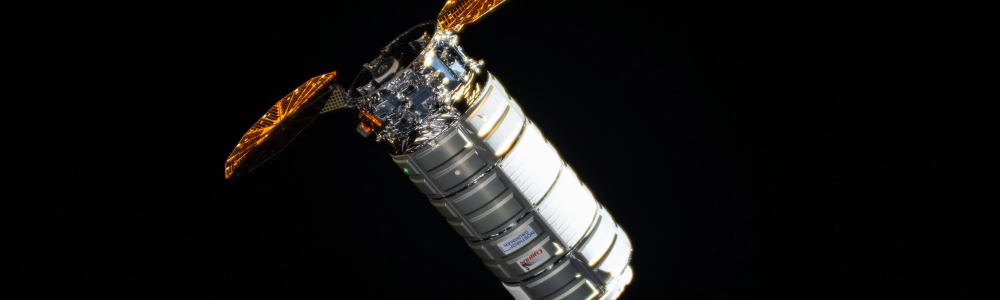

under 15 km
Russian inspector holding station beside Intelsat 39, recomputed daily
Vantage reads satellite behavior from public orbital data. No telescopes, no radar. Two products, ORBWATCH and GUARDIAN, put every call in the Command Center with sealed evidence behind it.

Computed by Vantage from public CelesTrak element sets. No sensors, no credentials, reproducible.
Everyone can see that a satellite moved. The tracking data is public. Vantage is the layer that tells you why.
Subtract what nature does to an orbit, the equatorial bulge and atmospheric drag, and whatever is left is somebody's engine. That residual is the whole product.
The intelligence layer: five models that read what an object did, why, and whether it is a threat, from public element sets alone.
Tells you that an object fired its engine, when, and how hard, without tasking a sensor. It works by subtracting the drift physics explains, the Earth's equatorial bulge (J2) and atmospheric drag, from the object's public element-set history. Whatever residual Δv is left is somebody's engine.
Names what the burn was for: station-keeping, an orbit raise or lower, a rendezvous, or collision-avoidance. Each call carries a confidence band and a written rationale from a rule-based model, so an analyst can check the reasoning rather than take it on faith. No black box to trust.
Flags an object the moment it breaks its own routine, judged against its own prior history rather than a fleet average. Dormant-then-active is the classic early warning. The model is learned rather than hand-tuned: scored on held-out data by an exact port of the public SPLID evaluator, it more than quadruples the F2 of the fixed-rule baseline it replaces.
Watches for something deliberately holding station beside one of your assets. It separates a purchased geometry from an incidental pass and from a benign co-orbiting formation. One-sidedness is the discriminator, shown under Evidence.
Ranks which close approaches are worth an analyst's morning. Screening is calibrated against 162,634 ESA close-approach reports, scoring 0.963 ROC-AUC and 0.010 Brier on that set. Public element sets carry no covariance, so this is a labeled screening prior, not an operational probability of collision.
The response layer: what to do about it, from the smallest dodge that answers a threat to where your sensors look next, and the same watch pointed at your own telemetry. No breach, no burn.
Recommends the smallest burn that answers a warning: it keeps a threatened asset outside its keep-out volume, within the propellant it has left, and makes no recommendation at all for a pass that already clears. Each carries its direction, timing, fuel cost, and the miss it buys. Scored on three labelled-synthetic campaigns and two benign controls.
Turns the warning queue into a schedule: which object each sensor looks at next, so a network spends its scarce minutes where the uncertainty and the threat are, not on whatever is overhead. Trained on held-out scenarios with real visibility geometry, it breaks from the greedy pick to catch a closing pass that would otherwise be stranded. This is the kill-chain gap the government keeps naming.
The same discipline pointed inward, at a satellite's own telemetry: flag the segment where a channel breaks its nominal pattern, a spike, a stuck sensor, a slow drift, before an operator sees it. The detector is fit only on healthy history, so it needs no catalogue of past failures to recognize a new one, and it is scored in the shape of the public OPS-SAT benchmark.
Open catalogs in; a ranked, assessed event out, with the signals behind it attached. One pass, no sensors of our own.
Open connectors normalize public catalogs (CelesTrak, Space-Track) and five-year element-set histories into one data fabric.
Remove J2 oblateness and atmospheric drag; the residual is thrust, detected, measured, timestamped. 519 maneuvers on a 1,039-object catalog in 6.0 s.
Four models name intent, score conjunction and shadowing risk, and check each object against its own pattern of life.
The event lands in the Command Center with the signals behind it attached, ranked so the calls that need a human get one first.
GUARDIAN attaches a response to any event that threatens a protected asset, and runs the same watch inward against your own fleet's telemetry.
Anyone can publish a detection. The question a defense buyer actually has is whether it survives being checked, so Vantage shows what separated the call from the benign case, then grades itself in public and ships the receipt.

Real pair, real elements: GRACE-FO 1 and 2 hold their spacing because orbital mechanics puts them there. Neither one spends propellant to stay, and the engine reads it that way.

One party maneuvers to hold station next to another that never agreed to it. The burn ledger carries the asymmetry that separates a shadower from a neighbor.
Both charts are engine output, same discriminator. The benign case is real, GRACE-FO 1/2 from public CelesTrak element sets. The shadowing case is the seeded scenario, where the one-sidedness alone carries the call at 100%.
Change one number and the seal breaks.
Every model behind the feed is graded on every release against explicit, versioned acceptance floors: detection recall, false-alarm rate, collision calibration, shadower recall. The result is sealed into a tamper-evident bundle, so a reviewer can re-check the claim instead of trusting it. The collision floor is calibrated against 162,634 real ESA close-approach reports, and the 1 SKIP is the real-data check itself: credential-gated, disclosed, never silently passed.
sealed sha256:732c19…
Open this gate running in the Command Center →synthetic scenario, real engine outputEach one gets its own acceptance policy: floors on recall, false alarms, and calibration tuned to which failure is unforgivable.

You have to call it, routine or a threat worth acting on, and defend that call to leadership. Vantage names what the object did and why, tells a deliberate shadow from an incidental pass, and runs on your own servers, even air-gapped.
Talk to us about protected-asset watch →Was that a normal station-keep, the first sign a bus is failing, or someone parking alongside? Vantage baselines every satellite against its own pattern of life and flags what breaks it, calibrated to keep false alarms off your on-call rotation.
Talk to us about fleet watch →Orbital compute nodes combine high-value hardware, limited propellant, and long replacement timelines. Operators need to distinguish a deliberate approach from ordinary formation geometry before committing to a response.
Talk to us about orbital infrastructure →Book a technical briefing with the Vantage team. We'll walk your mission set and run a live detection-to-evidence loop end-to-end.